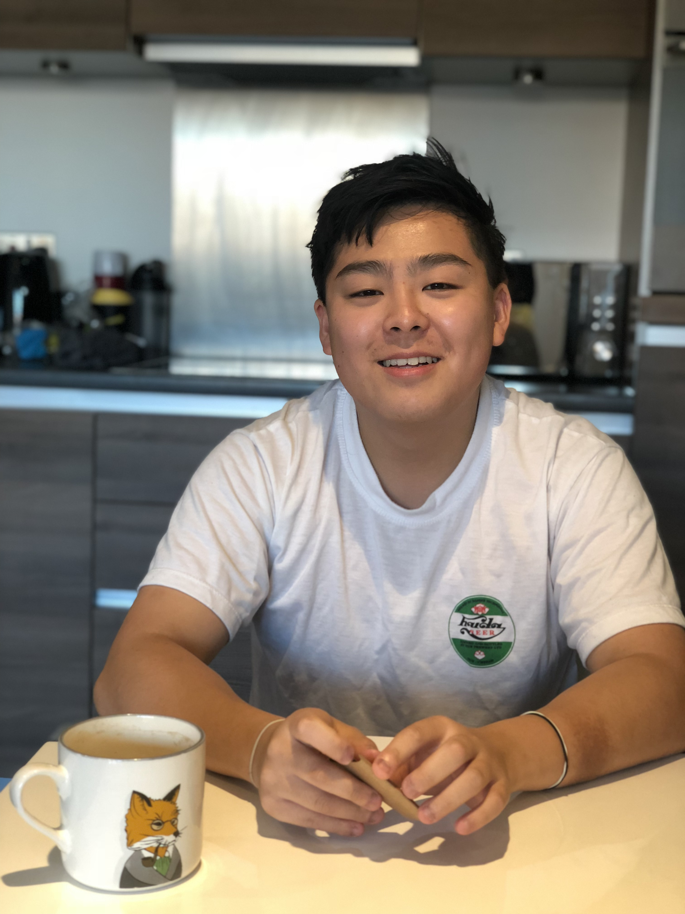

Senior Researcher in Machine Learning for Environmental Forecasting
I’m a senior research associate focusing on end-to-end machine-learning weather forecasting. In particular, I’m working on Project Cumulus, an initiative to develop bespoke data-driven weather subseasonal forecasting systems tailored for farming communities in West Africa.
I have a background in statistics, machine learning and software engineering. I hold a PhD in Statistics from the University of Warwick, supervised by Professor Gareth Roberts and Professor Murray Pollock. In my PhD, I focused on developing Monte Carlo methods for combining distributed statistical analyses (Fusion). I completed my undergraduate studies at the University of Leeds, where I was awarded a first class honours MMath Mathematics degree and received the Royal Statistical Society Prize.
I am interested in applying machine learning to environment and sustainability problems and currently focusing on end-to-end data-driven weather forecasting.